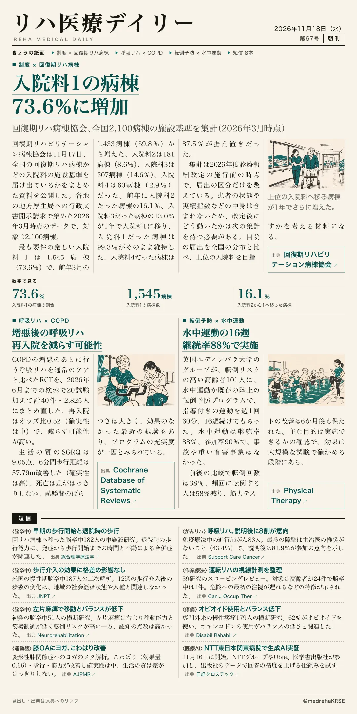
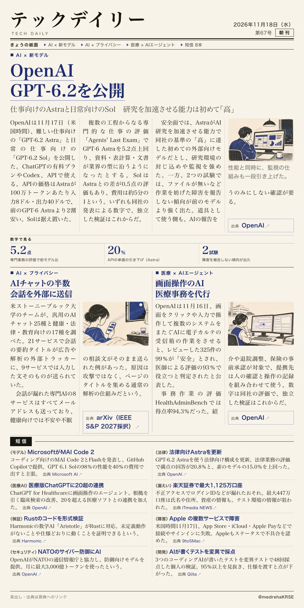

リハ医療デイリー
入院料1の病棟 73.6％に増加
回復期リハ病棟協会、全国2,100病棟の施設基準を集計（2026年3月時点）

テックデイリー
OpenAI GPT-6.2を公開
仕事向けのAstraと日常向けのSol 研究を加速させる能力は初めて「高」

回復期リハ病棟協会、全国2,100病棟の施設基準を集計（2026年3月時点）

仕事向けのAstraと日常向けのSol 研究を加速させる能力は初めて「高」
